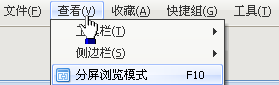

按住右键滑动鼠标，就能够执行前进、后退和刷新等常用操作。您还可以到设置中心对其进行自定义。
通过撤销按钮可以轻松找回失手关闭的重要网页，点击按钮旁边的下拉箭头还会显示最近关闭的页面列表。
通过历史搜索你可以方便的浏览、搜索和清除浏览历史记录、RSS历史记录以及搜索关键字历史记录

将浏览器窗口一分为二，更大发挥宽屏显示器作用；你可以同时浏览两个网站，转载和对照更加方便。

有效阻止各种弹窗、恶意网页的骚扰,还支持自定义过滤和免过滤列表。铺天盖地的广告，消失吧！
让你随时随地都可以访问自己的私人收藏夹内容。浏览器会在后台自动保存和同步你的在线收藏夹。
随叫随到的在线版记事本。多标签让管理更加方便，可以随时上传下载，也可以另存为文本文档。
将网页内容保存为多种图片格式，方便存档和分享。无论是全屏、局部还是整个页面截图，都由你决定。
通过设置代理规则，你可以通过不同代理服务器访问不同网站，有效提高浏览效率。
通过安装各种插件进一步扩展浏览器的功能。您也可以编写插件与全球用户分享。
不同的皮肤使界面呈现不同的风格，美化浏览器，代言你的个性.你还可以制作皮肤与全球用户分享